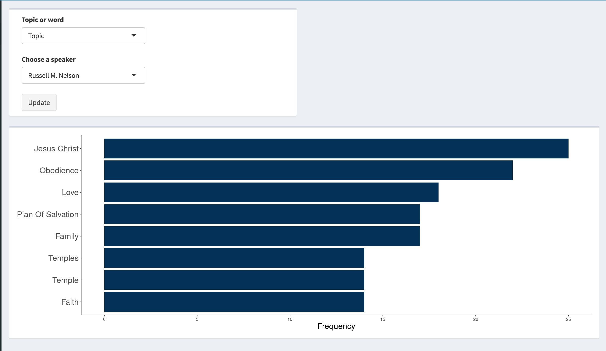
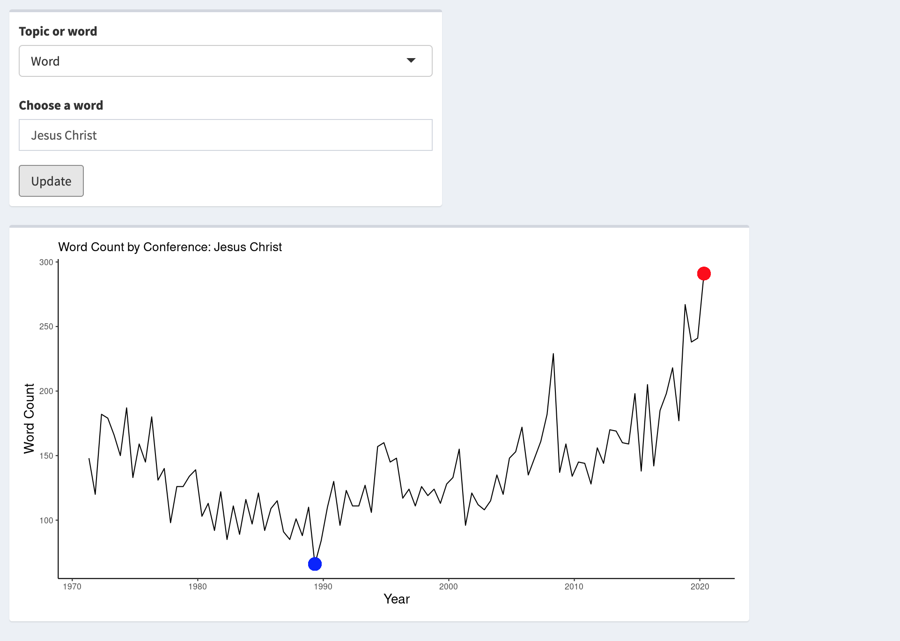
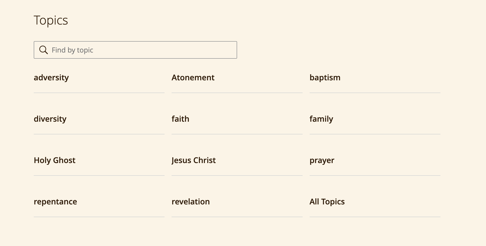

This project takes text from talks from General Conferenece of the Church of Latter-Day Saints and processes and analyzes the text. The processed data can be explored with this Shiny app. The code for scraping the data and the analysis can be found here.
Every 6 months The Church of Jesus Christ of Latter-Data Saints holds their General Conference, where church leaders speak for approximately 10 hours of the course of two days. The messages vary from speaker to speaker and from conference to conference. The text for these talks are available from as early as April 1971 through the most recent conference in October 2021. With the large amount of text from a variety of speakers, I was interested in how the usage of words and topics changed over time as well as common words for each speaker and conference.
The project is a combination for work from Skyler Gray, Daniel Garrett, Mckay Gerratt, and myself.
The data was web scraped from the official site of The Church of Jesus Christ of Latter-Day Saints using Beautiful Soup and Selenium in Python. There is a page with a similar format for each conference. An example of the page to be scraped is here. On this page, it lists the title for each talk, the speaker’s name, and possibly a small excerpt from the talk. For each talk, we extracted the speaker’s name as well as the href elements that corresponded to the link to the actual talk.
After collecting all of the links, we looped through all of the links and pulled the title of the talk and the text of the talk. The resulting information was saved into a pandas DataFrame that contained the year and month of the conference, the speaker’s name, the talk title, and the text of the talk. Afterwards, the data was written to a .csv file to be used in R for further analysis. The Python code for this can be found here.
After scraping the text of the talks, the text was processed and a Shiny app was developed to look at some of the patterns over time and by speaker. The text was tokenized by splitting the text into words and then stopwords, punctuation and numbers were removed from the text using the tidytext package. An example of the code used is shown below:
tidy_conf <- conf %>%
filter(!is.na(text)) %>%
arrange(desc(year), desc(month)) %>%
unnest_tokens(word, text) %>%
anti_join(stop_words) %>%
filter(!str_detect(word, '[0-9]+(:[0-9]+)*'))Once the text was in this format, it was summarized in a few different ways:
A tab for each of these different summaries was included in the Shiny app. The app allows you to choose among all speakers who have spoken during General Conference and any word can be searched to see its usage over time. The figures below show an example of the frequency plot and the change in words over time.
 
In addition to the texts of the talks, there are tags on each talk associated with a specific topic. For example, a talk may have tags such as faith, Jesus Christ, revelation, etc. The picture below lists some other examples of topics that exist for these talks. Selenium was used to scrape the talks as each topic was selected and then all of the talks and information about the talks were scraped. The HTML setup of the website made it easy to obtain this information by specifying a specific HTML class. The talk name, speaker, month, year, and topic were all included as an observation in the data that was saved.

With the topic information, similar summaries were created for this data, with the times a topic was talked about was calculated for each speaker and the times a topic was spoken about over time. The Shiny app allows a user to select to examine the topic summaries or word summaries.
Currently, most of this work includes scraping text data from the internet and processing it to summarize basic information about the text for each speaker. It would be interesting to do further analysis, such as sentiment analysis, part-of-speech tagging, or topic modeling as a few examples. With text data, there are a number of ways to explore and analysis the data and this work only scrapes the surface of what can be done with text data.
While this specific example (talks from General Conference) may be interesting to only a specific group of people, the process that was applied could easily be done to any type of texts, especially something that occurs consistently each year. The most difficult part of the process is understanding the layout of the website where the texts are contained. Once the HTML structure is understood, the process for scraping the data and summarizing it would be similar to the process that is taken here.
If there are any questions or feedback about the process or analysis or the development of the Shiny app, feel free to reach out to me via email.